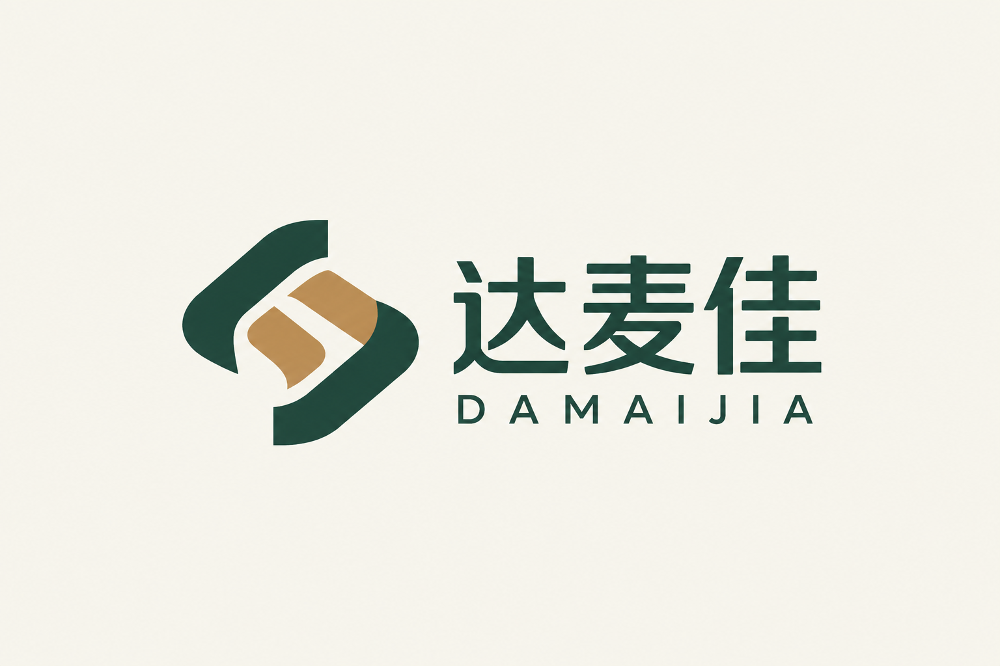

品质为本
重视产品来源与品质要求，将对食品的认真态度落实到选品、采购和交付各个环节。

深圳市达麦佳贸易有限公司成立于2020年，是一家立足深圳、面向中国内地、香港及海外市场的综合食品贸易企业，业务涵盖食品采购、批发分销与供应链服务，为零售、餐饮及食品批发客户提供多品类的食品选择与采购支持。
公司以蛋类及蛋制品、豆制品、新鲜蔬菜和水果为主要经营品类，同时经营粉面及面皮、酒类饮品、休闲零食、冷冻水果和熟食预制品。从日常生鲜到包装食品，我们围绕不同渠道的经营特点与采购需求，持续丰富产品组合，为客户提供更便捷的选品与采购体验。
达麦佳重视与产地、农场及食品生产供应商的合作，关注产品来源、品质、规格和季节性供应变化。通过产地采购与供应资源整合，衔接选品、订单、品质检查及储运安排，让产品供应更贴近客户的实际经营需要。
我们相信，长期合作建立在产品品质、清晰沟通与认真履约之上。达麦佳坚持诚信经营，以务实的服务与上下游伙伴共同发展，致力于成为值得信赖的食品贸易合作伙伴。
重视产品来源与品质要求，将对食品的认真态度落实到选品、采购和交付各个环节。
理解不同渠道在品类、规格、包装及补货方面的需求，提供适合实际经营的产品选择。
重视信息沟通与合作承诺，及时反馈供应变化，以透明、务实的方式推进业务。
与供应商及客户保持紧密协作，在稳定合作中持续完善产品与服务。